チームメンバー全員の合意を得てから読み進めましょう。
ヒント使用時間目安
10分経過：1st STEPに挑戦中の場合ヒントを見る
20分経過：2nd STEPに挑戦中の場合ヒントを見る
30分経過：3rd STEPに挑戦中の場合ヒントを見る
40分経過：4th STEPに挑戦中の場合ヒントを見る
50分経過：5th STEPに挑戦中の場合ヒントを見る
子供たちの手紙に書かれた謎を解きましょう。
右下に書かれた子供の名前を見て、ヒントをご確認ください。
物の名前を横向きに、色の名前を縦向きに入れて、クロスさせましょう。
左から順に、赤色の箱、青色のベル、黄色の星がそれぞれ入ります。
ボックス/レッド、ベル/ブルー、スター/イエロー と入ります。
よって、答えはボールです。
左のイラストを表すような文章を完成させましょう。
一番左の２文字には「そり」を入れます。
上は「ソリとトナカイとサンタ」、下は「ぞうりと長いサンダル」となります。
よって、答えはサンダルです。
数字の左側にはそのまま数字の読み方を入れましょう。
右側については、カレンダーを思い浮かべながら考えてみましょう。
左側は「にじゅうよん」、右側は「クリスマスイブ」のように当てはめます。
よって、答えはじょおうさま（女王様）です。
「①き」が「ケーキ」を表しているとすれば、「①＝けー」となります。
このように、丸数字１つに、アルファベット１文字が対応させられます。
また、右上のイラストは SU（巣）を表しています。
矢印はアルファベット順で１つ前、１つ次の文字に変化させることを表します。
K, P, L, Bから文字を変化させて、答えは KOMA、すなわちコマです。
『プレゼント用意シート』の右側にある写真から、
ボール、サンダル、女王様、コマをそれぞれ探しましょう。
青色のドッジボール、黒色のサンダル、トランプのクイーン、将棋のコマに〇を記入したら、手を挙げて妖精を呼びましょう。
バラバラになったフローチャートを、招待状（しょうたいじょう）が赤色の箱にたどりつくように復元することが目的です。
まずは、赤色の箱がどこに置かれるのかを考えましょう。
赤色の箱が左下に来る場合、招待状が左上をスタートしてから４連続でYESになる必要がありますが、これはできません。
よって、以下の配置が確定します。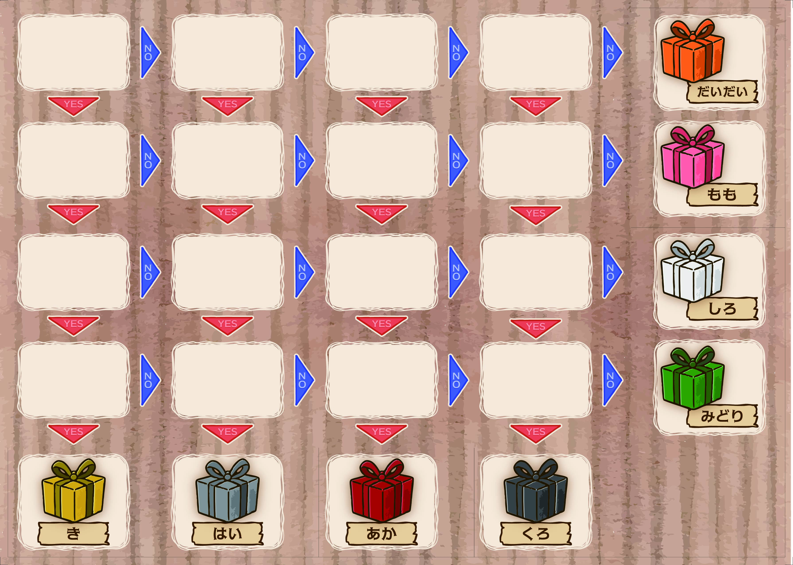
次は、赤色の箱の真上に置くことができる質問はどれか考えましょう。
赤色の箱の上には、招待状に対してYESとなる質問が来る必要があります。
このことから、以下の配置が確定します。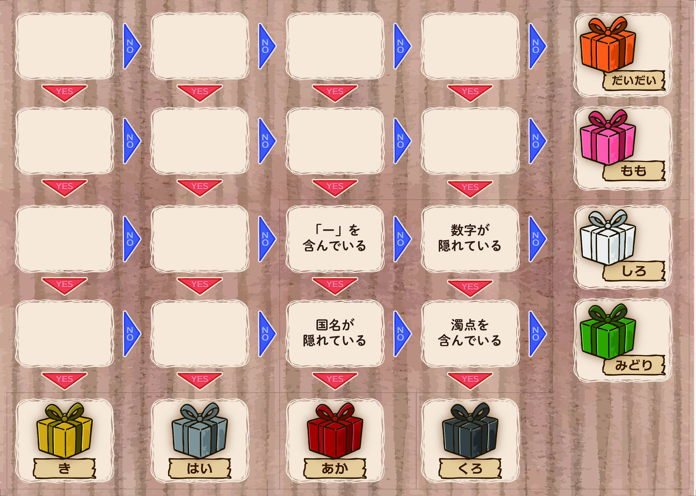
次は、左下に置くピースが特定できそうです。
「国名が隠れている」という質問の左には、招待状に対してNOとなる質問が来る必要があります。
このことから、以下の配置が確定します。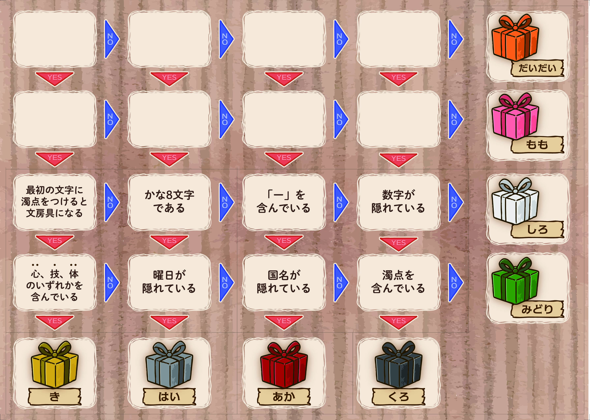
次は、左上に置くピースが特定できそうです。
復元したフローチャートは以下の通りです。
左上から、ドッジボール、サンダル、トランプ、将棋（しょうぎ）をそれぞれたどります。
サンダルが 左（さ）を含むことに注意しましょう。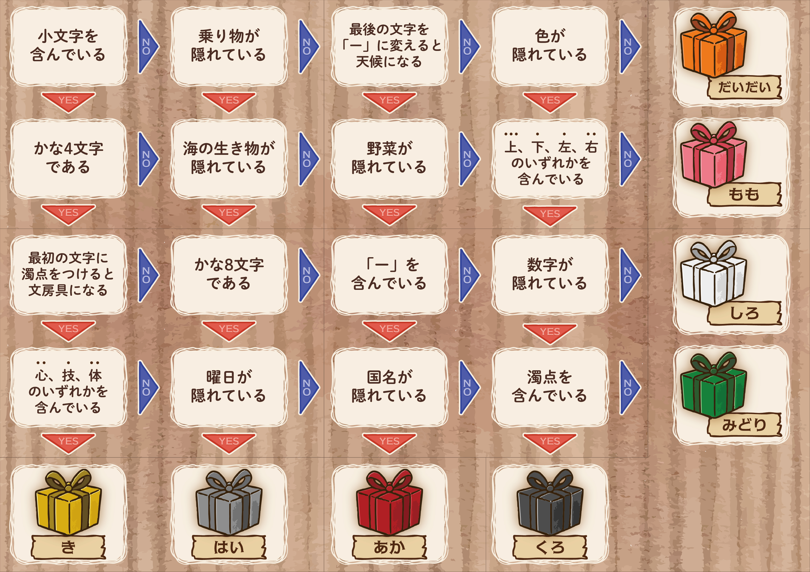
それぞれのプレゼントに対応した箱の色は、
ドッジボール：もも
サンダル：くろ
トランプ：だいだい
将棋（しょうぎ）：き
となります。これを『箱の色特定シート』に記入して、倉庫に向かいましょう。
降雪の魔法を使って通れない道を増やすことで、トラックを誘導することができそうです。
マップを見ながら、雪を降らせたい３か所の道路がどこか、考えていきましょう。
子供の家は、以下の画像に示した１から４の順で通ることになります。
まずは、周辺が通行止めに囲まれている２の家に行く方法を考えましょう。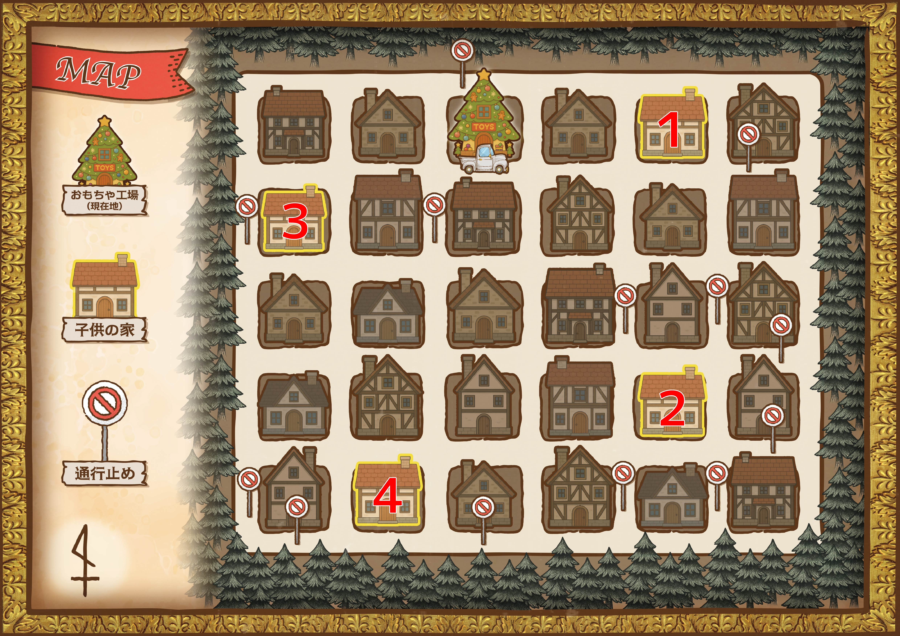
青丸の箇所に雪を降らせましょう。
これで２の家と３の家を通ることができます。
次は、１の家を通りつつ２の家まで行く方法を考えましょう。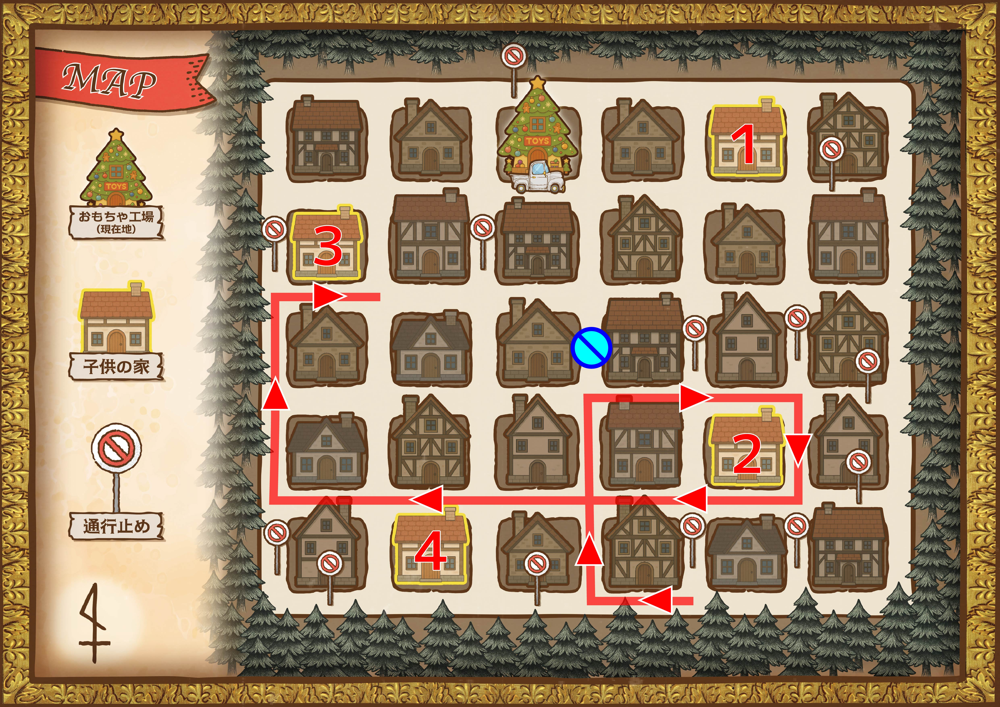
青丸の箇所に雪を降らせましょう。
これで外側を大きく回って、先ほど考えていた道に合流することができます。
最後に、４の家を通りつつ工場前に帰ってくる方法を考えましょう。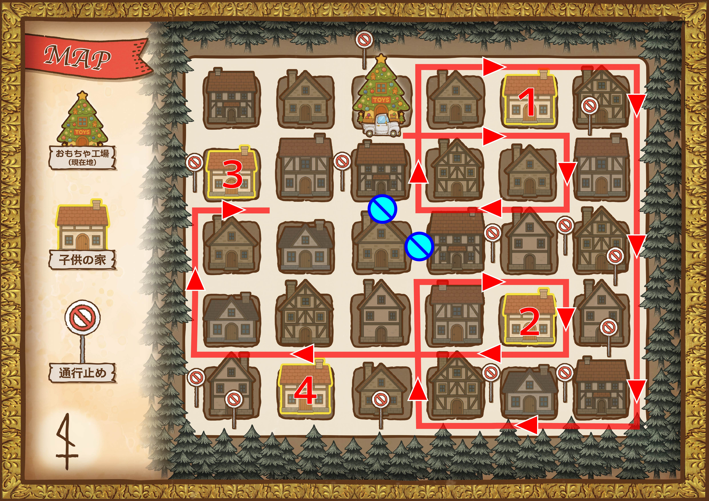
青丸が示す３箇所が雪を降らせたい道路です。
『降雪場所シート』に〇を記入したら、手を挙げて妖精を呼びましょう。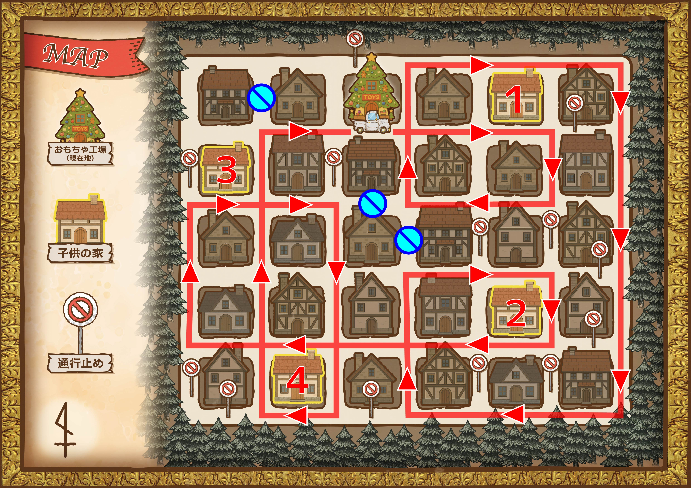
妖精から伝えられた訂正内容によると、「右」という漢字が「左」に変わりそうです。
よって「トラックは直進できない状況になると左折する」として、解き直しましょう。
子供の家は、以下の画像に示した１から４の順で通ることになります。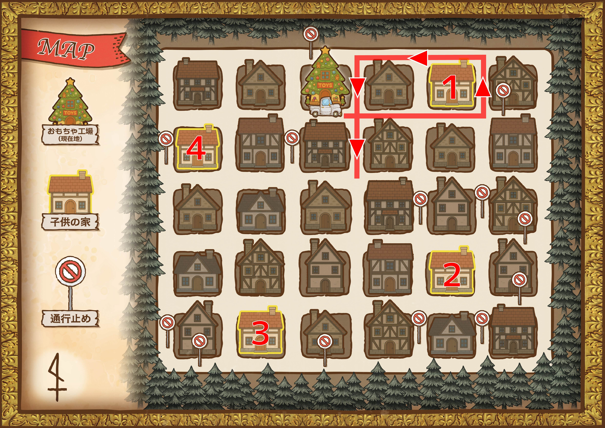
青丸の箇所に雪を降らせましょう。
これで２の家を通ることができます。
次は、３の家まで行く方法を考えましょう。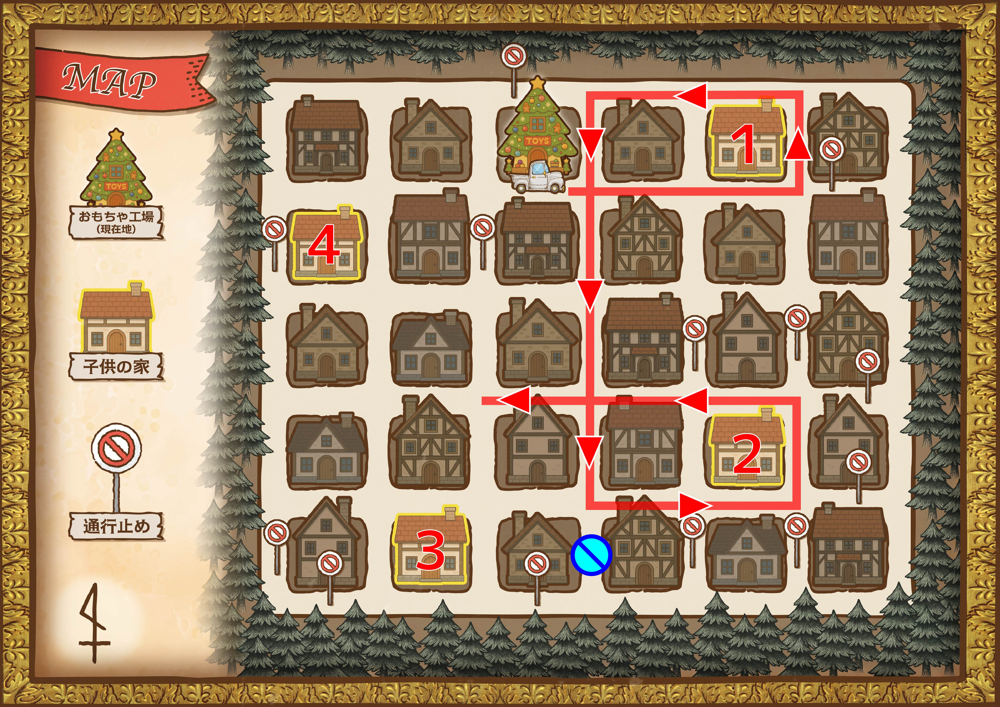
青丸の箇所に雪を降らせましょう。
これで３の家と４の家を通ることができます。
最後に、工場前に帰ってくる方法を考えましょう。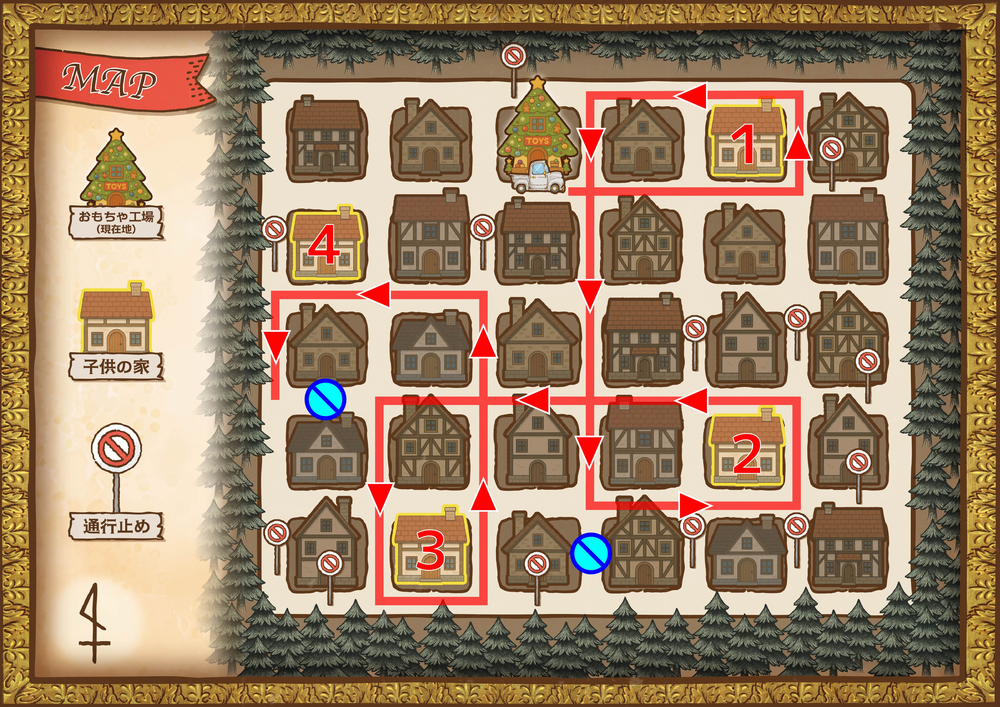
青丸が示す３箇所が雪を降らせたい道路です。
『降雪場所シート』に〇を記入したら、手を挙げて妖精を呼びましょう。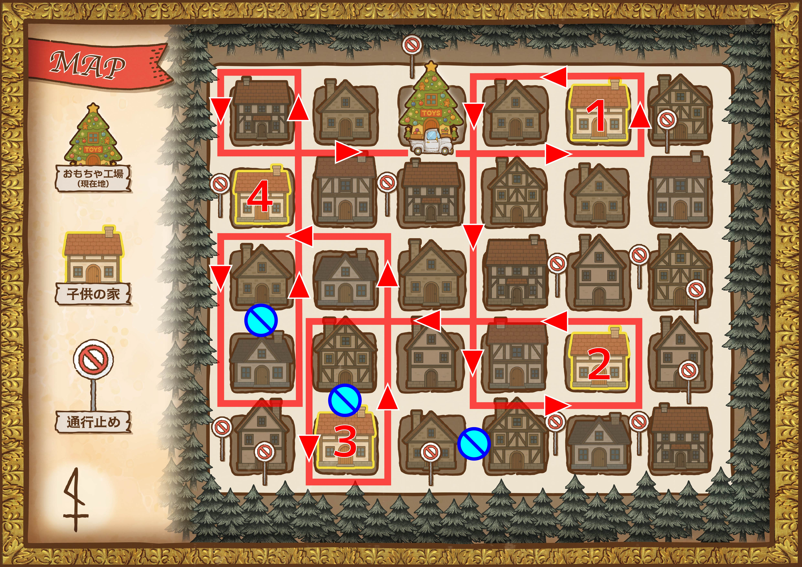
メッセージカードに描かれたイラストを、共通点を持つ４枚の組に分けていきましょう。
なお、共通点は複数パターン存在し、その中には組み分けに使わないものも存在します。
共通点を持たない４枚が最後に残った場合は、何かが間違っているので、考え直しましょう。
「干支に含まれる」という共通点は、組み分けに使いません。（残りの組み合わせが上手くいかなくなります）
他のパターンを考えましょう。
共通点のうち１つは「九九と同じ読み」であり、肉、サンゴ、獅子、葉っぱの４枚です。
馬、鳥、熊、鹿の４枚は１つの組になります。動物の中でもこの４種だけが持つ共通点があります。
それは、これらの漢字があるものに含まれているということです。そのあるものには、北と東は含まれますが、西と南は含まれません。
４つの組み合わせは、以下の通りです。
都道府県に含まれる：馬、鳥、熊、鹿
色と同じ読みの言葉：木、城、肺、腿（もも）
九九と同じ読みの言葉：肉、サンゴ、獅子、葉っぱ
動詞と同じ読みの言葉：かえる、菊（きく）、猿（さる）、龍（たつ）
メッセージを完成させたら、『子供たちに送ったプレゼント』の資料を参考に、どのメッセージが誰に宛てるべきものか特定しましょう。
例えば、女王様が好きだということでクイーンのカードを送ったキャシーには、「女王様へ」という書き出しのメッセージを送りましょう。
送り先と共通点の組み合わせは以下の通りです。
アンナ：色と同じ読み
ボブ：動詞と同じ読み
キャシー：九九と同じ読み
ダニエル：都道府県に含まれる
これを『メッセージ作成シート』に記入して、小部屋に向かいましょう。
謎におけるプレゼントマークには子供たちに送ったプレゼントを、レビューマークには星の数をそれぞれ当てはめて解く謎です。
アンケートから、プレゼントと星の数の組み合わせは以下だとわかります。
１：サンダル
２：トランプ
３：ドッジボール（すみません、バスケットボールに読み替えてください）
４：将棋
しりとりを試していくと、7つ目の言葉が「バ」で始まることがわかります。最後がバスケットボールになるように、7つの言葉でしりとりをしましょう。星の数は「3」が当てはまります。
答えは「かいけん」です
プレゼントの3文字目が「だ」であることから、プレゼントは「さんだる」星の数は「いち」だとわかります。
イラストは順に、シチュー、ききゅう、サイダー、ふうふ、バナナです。
答えは「シンバル」です
太陽をつなぐ線は「ちきん」、バクをつなぐ線は「えんとつ」となります。全てのマスに1本ずつ線を引くというルールに注意しましょう。
この謎は、星の数を2、プレゼントをトランプとすれば解くことができます。
答えは「グリンピース」です
まずは左側の盤面で「凶」の文字を探しましょう。そのひとつ上を見ると、漢字の「四」ができそうです。そこで、星の数は4、プレゼントは将棋として謎を解きましょう。
将棋をパーツごとに分解し、ひとつ下を見ると答えが導けます。
答えは「線路」です。
ここまでの謎の答えをもとに、シンバル⇒グリンピース⇒会見⇒線路の順につなぎましょう。
答えは「給料（きゅうりょう）」です。
まずは『計画資料』がどこにあるか特定する方法を考えましょう。どこにあるかわかったら、妖精を呼んで、調べてもらうようにお願いしましょう。
（この先のヒントが必要な場合は、妖精を呼んでください）